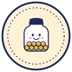

/protocol
Kulaya Protocol
Kulaya turns QR sales into an on-chain revenue record that unlocks collateral-free micro-loans for Indonesian small shops, repaid automatically as a share of each sale. The AI proposes. The contract decides.


AI AgentsAn LLM underwriter with an ERC-8004 identity and on-chain reputation, boxed in by code it cannot override.
Finance & CommerceRevenue-based micro-credit: limit = 10% of verified 30-day sales, repaid as a share of each sale.
Consumer AppsA Bahasa-first, gasless owner app and Telegram bot built for warung owners aged 35–60.
01
The 60-second tour
02
Live numbers
Pool valueRp 50 jtIDRX (test)
Out on loanRp 1,8 jt3 active
First-loss reserveRp 14.40020% of fees
Loans closed4repaid
AI score—ERC-8004 avg
Shops6registered
03
Architecture
1–2. Each payFor writes a revenue record and splits the payment. The cap is computed on-chain from trailing 30-day revenue.
3–4. The AI wallet can only call propose_loan. The owner accepts with an EIP-712 signature, which the relayer submits gaslessly.
5–6. Every later sale auto-repays its share. When the loan closes, the keeper reports the outcome to the ERC-8004 Reputation Registry.
04
Security model: four shields
1
The AI key can only proposeIt holds no funds and has no role that moves value. Accepting requires the owner's own signature.
2
Hard on-chain caps10% of trailing revenue · tier max · fee ≤ 5% · repay ≤ 20% · ≤ 5% of pool per loan · daily budget · ≥ 5 distinct payers · per-payer daily cap Rp 250.000.
3
Policy layer: the LLM never writes numbersReplies use
{{placeholders}} that code fills from contract reads.4
Reply guardEvery figure in a reply must exist in a tool result, or the reply is rejected.
05
Team & links
team names + roles (from submission)